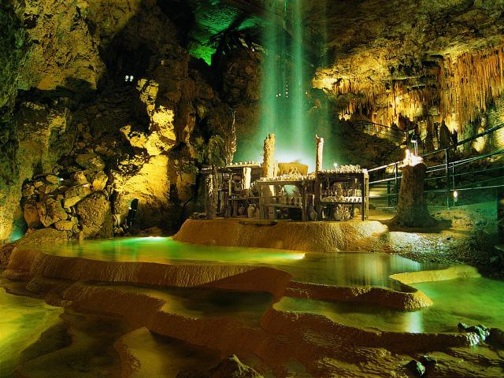

Les Grottes à visiter
Notre patrimoine coup de coeur...

Gouffre de Proumeyssac
Déjà célèbre au XVIIIe siècle pour ses terrifiantes légendes, le Gouffre de Proumeyssac ne fut exploré qu’en 1907. Bâptisé « Cathédrale de cristal », Proumeyssac est aujourd’hui la plus grande cavité aménagée du Périgord. Par un tunnel, on accède facilement à cette immense voûte souterraine aux parois ornées d’une multitude de cristallisations d’une densité et d’une beauté exceptionnelles. La nouvelle mise en lumière, soutenue par un accompagnement musical complète l’originalité de ce site. La visite de 45 mn, commentée par des guides expérimentés, laisse un souvenir impérissable.
D'autres grottes qui pourraient vous intéresser...
, voire en scènes (rennes affrontés). Par comparaison stylistique, ces témoignages artistiques sont généralement rattachés à la période magdalénienne (vers 15 000 av. J.-C.).")
, elle mérite un détour. L'ouverture de la grotte se situe sur le flanc droit de la vallée de Labinche (affluent du Manaurie). La grotte est située sur le plateau calcaire de Légal, au milieu de la forêt. On pénètre dans la grotte par l'un de ses trois porches naturels, probablement le seul qui était accessible au Paléolithique.
Dans le passé plusieurs noms ont été attribués à Rouffignac, comme la grotte de Miremont, le Cro des Cluzeau ou le Cro de Granville.")